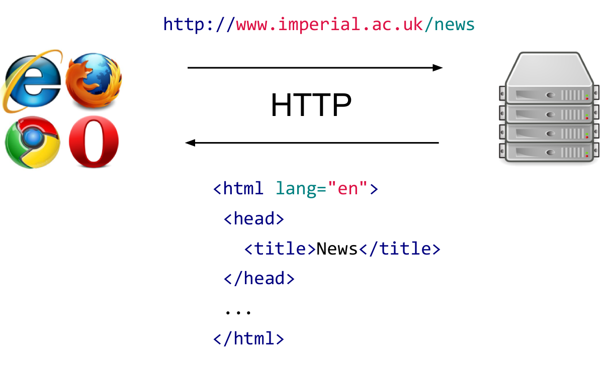
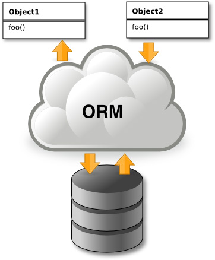

Web application development using Django
To get you working with the Python Django Framework, and not against it
Created by Filippo Mortari
Who is this guy?
(yeah, that’s right, yet another fancy presentation. sue me.)

- Research Software Developer at the BSS
- software for the management of the data generated by the biologists and computational modelers in Systems Biology
- web apps for many different research groups and Health Care Professionals within the Faculty of Medicine and the five Hospitals in Imperial College Healthcare NHS Trust
- interested in the internet and tech
- has beard
Today's lecture outline
- Quick review of web concepts
- Introduction to Django
- Practical
- Django basics
- Templates and static media
- Models and databases
- Models, templates, and view wired alltogether
- More Advanced concepts
- User authentication
- Working with templates
Introduction to Django
Prerequisites
- Python
- HTML, CSS, JavaScript
- HTTP
- SQL
Outcomes
- Ability to create a database-driven website
What is Django?

- A python web application framework
- encourages rapid development and clean, pragmatic design
- full stack (: full-stack frameworks are ones that help us with the full development stack from the user interface till the data store.)
- Open source
- 10 years old
- Maintained by a non-profit foundation
Why web applications?
- The web is ubiquitous and dominant
- Browsers are everywhere
- It’s cross-platform
- It’s multi-purpose
- It’s unavoidable
Why Django?
non tech reasons
- Mainstream
- Well engineered
- Extremely well documented
- Large, helpful community
Why Django?
tech reasons
- Python: NumPy, SciPy, matplotlib, IPython, Biopython...
- “MVC”
- Cross-platform
- Database neutral
- Self-contained (“macroframework”)
- PaaS support
Recap the web
How to use Python in the web?
CGI scripts...
import MySQLdb, os
if os.environ['PATH_INFO'] == '/':
print 'Content-Type: text/html'
print
print '<!DOCTYPE html>'
print '<html><head><title>Library</title></head><body>'
print '<h1>Books</h1>'
print '<ul>'
with MySQLdb.connect(db='ctu', user='user', passwd='password', host='127.0.0.1') as c:
c.execute('SELECT title FROM books ORDER BY published DESC LIMIT 5')
for row in c.fetchall():
print '<li>%s</li>' % row[0]
print '</ul>'
print '</body></html>'
Why not CGI?
- Error prone
- Insecure
- Tedious (see connection handling)
- Not modular
- Mixes HTML, SQL, CSS, JavaScript, Python
CGI vs Django

now let's stop with the bla bla bla..
and let's tango with Django!
CTU: initial specification
In this first practical we'll create a basic but fully functional Django app to manage studies run by a ficticious Clinical Trials Unit.
Getting started
- Log into Windows on a lab computer
- Start Eclipse
- Create a workspace on the C: drive for your Python projects:
- Configure the Python interpreter:
- Close the welcome screen
Start > All Programs > eclipse
File > Switch Workspace > Other...
Workspace: "C:\Users\<your username>\PythonWorkspace"
Window > Preferences > PyDev > Interpreters - Python Interpreter > Quick Auto Config > OK > OK
Creating your Django project
- Create an empty project
- Create a main app:
File > New > Other...
PyDev > PyDev Django Project > Next
Project name: CTU
Next > Next > Database settings > username: <your username> password: admin
Yes
CTU (right-click) > Django > Create application
"main" > OK
Creating your Django project
- Register your app in CTU/CTU/settings.py
- Make sure your server works:
- visit the page localhost:8000
Add 'main' to INSTALLED_APPS
CTU (right-click) > Run as > 1. PyDev:Django

Creating a view
- open CTU/main/views.py and copy-paste this piece of code:
from django.http import HttpResponse
def index(request):
return HttpResponse("<h1>'main' says hey there world!</h1>")
Mapping URLs
- add a new urls.py for better modularization:
- copy-paste in the newly generated file:
- add this line in CTU/CTU/urls.py:
main(right click) > New > File > urls.py
from django.conf.urls import patterns, url
from main import views
urlpatterns = patterns('',
url(r'^$', views.index, name='index'))
url(r'^main/', include('main.urls')),
- verify that everything works fine.. localhost:8000/main/
we can do better: templating
- create templates folder
- add these lines in CTU/CTU/settings.py (somewhere under BASE_DIR)
CTU (right click) > New > Folder > Folder name: templates/main
TEMPLATE_PATH = os.path.join(BASE_DIR, 'templates')
TEMPLATE_DIRS = [
# Always use forward slashes, even on Windows.
# Don't forget to use absolute paths, not relative paths.
TEMPLATE_PATH,
]
- create a new file called index.html under CTU/templates/main
- copy-paste this snippet in the newly generated file
<!DOCTYPE html>
<html>
<head>
<title>CTU</title>
</head>
<body>
<h1>CTU main app says...</h1>
hello world! <strong>{{ boldmessage }}</strong><br />
</body>
</html>
- add this import to the CTU/main/views.py
- modify the index() method as follows
- check everything by reloading localhost:8000/main/
from django.shortcuts import render
def index(request):
teacher = 'Filippo'
# Construct a dictionary to pass to the template engine as its context.
# Note the key boldmessage is the same as {{ boldmessage }} in the template!
context_dict = {'boldmessage': "%s taught me how to inject dynamic content in templates!" % teacher }
# Return a rendered response to send to the client.
# We make use of the shortcut function to make our lives easier.
# Note that the first parameter is the template we wish to use.
return render(request, 'main/index.html', context_dict)
Serving static assets
- create static folder
- add these lines in CTU/CTU/settings.py (somewhere under BASE_DIR)
- drop this image into CTU/static/img folder
CTU (right click) > New > Folder > Folder name: static/img
STATIC_URL = '/static/'
STATIC_PATH = os.path.join(BASE_DIR,'static')
STATICFILES_DIRS = (
STATIC_PATH,
)
- modify CTU/templates/main/index.html as follows
- hopefully localhost:8000/main/ contains an image...
<!DOCTYPE html>
{% load staticfiles %} <!-- New line -->
<html>
<head>
<title>CTU</title>
</head>
<body>
<h1>CTU main app says...</h1>
hello world! <strong>{{ boldmessage }}</strong><br />
<img src="{% static "img/clinical_trials.png" %}" alt="Picture of ctu" /> <!-- New line -->
</body>
</html>
Models and databases
THE MAN taught you how to master both
- Object Oriented Design
- Relational Database Schema Design
two different worlds that complement each other
Models and databases
- but you just want to design your object model and assume that "somehow" your modifications will be cascaded to your relational schema...
- Modern web frameworks come with Object Relational Mapping off the shelf
- ORM is cool because:
- Changes to the object model are made in one place
- Huge reduction in code
- Provides an object oriented query language
- Navigation. You can navigate object relationships transparently. Related objects are automatically loaded as needed.
- You can easily plug and unplug different databases (e.g. Postgres, MySql, etc.. etc..)
Models and databases
our very simple model with One-to-many relationship
- dont forget to migrate the database:
- create a superuser (from command promt run this from the root folder CTU):
CTU (right-click) > Django > Migrate
H:\users\whatever...\CTU> python manage.py createsuperuser
Creating Models
- open CTU/main/models.py and copy-paste this snippet
- you changed your models, now make the migrations
class Study(models.Model):
name = models.CharField(max_length=200)
startDate = models.DateField()
def __unicode__(self): #For Python 2, use __str__ on Python 3
return self.name
class Patient(models.Model):
firstName = models.CharField(max_length=200)
lastName = models.CharField(max_length=200)
study = models.ForeignKey(Study)
def __unicode__(self): #For Python 2, use __str__ on Python 3
return self.firstName + self.lastName
CTU (right-click) > Django > Make migrations > type main
Creating Models
- and apply the migrations (this will automatically modify your schema accordingly, FTW!):
- copy this populating script in the root folder of your project and execute it:
CTU (right-click) > Django > Migrate
H:\users\whatever...\CTU> python populate_main.py
Creating Models
Let's verify it worked..
- let's change the code in CTU/main/views.py
from django.shortcuts import render
from django.http import HttpResponse
from main.models import Study
def index(request):
teacher = 'Filippo'
study_list = Study.objects.all()
context_dict = {'boldmessage': "%s taught me how to inject dynamic content in templates!" % teacher , 'studies':study_list}
return render(request, 'main/index.html', context_dict)
- and the CTU/templates/main/index.html :
<!DOCTYPE html>
{% load staticfiles %}
<!-- New line -->
<html>
<head>
<title>CTU</title>
</head>
<body>
<h1>CTU main app says...</h1>
hello world!
<strong>{{ boldmessage }}</strong>
<br /><br />
{% if studies %}
<table>
<tr>
<th>Study</th>
</tr>
{% for study in studies %}
<tr>
<td>{{ study.name }} </td>
</tr>
{% endfor %}
</table>
{% else %}
<strong>There are no studies present.</strong> {% endif %}
</body>
</html>
- more info about Model DataTypes and Objects relationships here
Let's create a page that lists all of the patients under a study
- replace the line that prints the study in CTU/templates/index.html
- modify the url regex in CTU/main/urls.py:
urlpatterns = patterns('', url(r'^$', views.index, name='index'), url(r'^study/(?P<studyID>\d+)/$', views.study, name='study'),) # add this line
<td><a href="study/{{ study.pk }}">{{ study.name }} </a></td>
- add a new method in CTU/main/views.py:
def study(request, studyID):
results = {}
try:
study = Study.objects.get(pk=studyID)
patients = Patient.objects.filter(study=study)
results['studyName'] = study.name
results['patients'] = patients
results['study'] = study
except Study.DoesNotExist:
pass
return render(request, 'main/study.html', results)
- create a new template called study.html and place it in CTU/templates/main:
<!DOCTYPE html>
<html>
<head>
<title>Rango</title>
</head>
<body>
<h1>{{ studyName }}</h1>
{% if study %}
{% if patients %}
<ul>
{% for patient in patients %}
<li>{{ patient }}</li>
{% endfor %}
</ul>
{% else %}
<strong>No patients currently under this study.</strong>
{% endif %}
{% else %}
The specified study {{ studyName }} does not exist!
{% endif %}
</body>
</html>
- you should be able to see urls that match study IDs by mouse-hovering the links in localhost:8000/main/
Too much code duplication in the templates? No probs
Template Inheritance
- Add this file called base.html in CTU/templates/main
<!DOCTYPE html>
<html>
<head>
<title>CTU - {% block title %}How to Tango with Django!{% endblock %}</title>
</head>
<body>
<div>
{% block body_block %}{% endblock %}
</div>
<hr />
<div>
<p style="font-size:10px; color:red; font-weight:bold;">All rights reserved -- CTU Inc.</p>
</div>
</body>
</html>
- As a proof of concept lets slightly modify the index.html
{% extends 'main/base.html' %}
{% load staticfiles %}
{% block title %} Homepage{% endblock %}
{% block body_block %}
<h1>CTU main app says...</h1>
hello world!
<strong>{{ boldmessage }}</strong>
<br /><br />
{% if studies %}
<table>
<tr>
<th>Study</th>
</tr>
{% for study in studies %}
<tr>
<td><a href="study/{{ study.pk }}">{{ study.name }} </a></td>
</tr>
{% endfor %}
</table>
{% else %}
<strong>There are no studies present.</strong> {% endif %}
{% endblock %}
Left to you...
- Try to add a page that embeds a form for creating new studies...
- Hints:
- Take a look at how Django handles forms
- create a forms.py file under CTU/main in order to maintain views.py clean
- create a new method called add_study() in views.py for handling the form
- create a template for the form
- map the view add_study() in main/urls.py
- create a link in the index.html for the new page